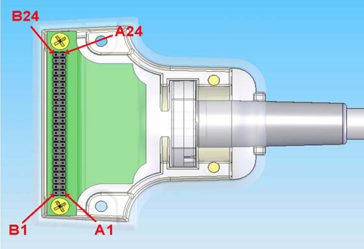

- 00000018WIA30921F20GYZ
- id_131068443.0
- Aug 29, 2019 1:57:28 AM
1.5T HD 8-Channel Foot Ankle Coil Troubleshooting Tips
The following are troubleshooting tips for various issues with the 1.5T HD 8-Channel Foot Ankle Coil by Invivo (M3340CD).
Personnel Requirements
| Required Persons | Procedure Timing |
| 1 | 60 minutes |
Tools and Test Equipment
Digital Volt Meter
Required Conditions
The following coil configuration name must be installed to run this tool: HD Foot Ankle
Procedure
Receiving No Signal
Problem:
Unable to pre-scan or scanning, and not receiving a signal.
Possible Solution:
-
Verify the appropriate system coil was selected. (Refer to the Operators Manual for additional information.)
-
Verify the green light above Port A is illuminated. (This indicates the coil is properly plugged into the system.)
-
Verify the Landmark is correct and the cradle did not unlatch.
-
Verify the scan locations and any FOV offsets are correct.
-
Perform a Continuity Check (must be done by a GE-authorized Service Engineer) on the external cable, explained below.
-
Verify the coil is positioned with the cable exiting toward the bore, and ensure the system and coil polarity match.
-
If still not receiving a signal, try to scan (transmit and receive) with the body coil. For this test, be sure to remove the imaging coil from the magnet bore before scanning with the body coil. If still receiving no signal, the problem is probably with the MR system.
-
If the scan completes successfully, there is probably a problem with the Invivo coil. Contact GE for further assistance. If unable to scan with the substitute coil, there may be a system problem related to this particular coil type.
-
Image Quality
Problem:
Image quality is not what is expected based on the parameters selected.
Possible Solution:
-
Review the selected protocol. If performing the Periodic Quality Assurance, be sure the protocol is identical to the protocol provided in the System Recommended Protocols. If performing diagnostic images, increasing NEX or FOV may be required.
-
Perform a Continuity Check (must be done by a GE-authorized Service Engineer) on the external cable, explained in below.
-
Verify there are no loops in the cables.
-
Verify there are no metal or ferromagnetic objects (for example, safety pin, hair pin) close to the coil, patient or magnet.
-
Verify that the coil is properly positioned.
-
Verify the center frequency is within the frequency adjustment range for the system.
-
Verify the R1, R2 and TG values from the pre-scan are within normally expected ranges.
Cleaning the electrical contacts that connect the upper and lower halves with Isopropyl acohol and a cotton swab has demonstrated to improve the coil’s SNR on occasion. If not already done, perform a Multi-Coil Quality Assurance (MCQA) Test.
-
If the values obtained do not fall within normal operating parameters, investigate this further by performing a phantom scan with the body coil. For this test, be sure to remove the imaging coil from the magnet bore before scanning with the body coil.
-
If still having the same issue, there is likely an MR system problem. If the body coil scan is satisfactory, acquire a scan using both another coil of the same type plugged into the same system Port (A). If the image quality is visibly improved, there may be a problem with the Invivo coil. Contact GE for further assistance. If the image quality still suffers, there may be a system problem related to imaging with this type of coil.
-
Artifacts
Problem 1:
There is a black line or signal void on the image.
Possible Solution:
Verify that there is no metal present in the area being scanned in or on the patient.
Problem 2:
Some or all of the images appear shaded or exhibit uneven signal or banding.
Possible Solution:
Confirm that no metallic objects are located nearby, outside the Field of View (FOV). This is especially important on images utilizing Fat Saturation. If Fat Saturation is being used, verify that the Center Frequency Adjustment (CFA) fine adjustment was optimized.
External Cable Wear
Problem:
The system will not recognize the coil or scan with the coil attached.
Possible Solution:
Perform the Cable Continuity Check described below.
-
RF Signal Channels Check: The center pins of the System Connector receive coaxial connectors are extremely fragile. Do not attempt to make any measurements at these center pins.
-
If one or more of the readings indicate a short, replace the cable.
-
If all of the readings indicate an open circuit condition, proceed to MC Bias Line (DC Line) Check below.
With the coil cable disconnected, use a multimeter to ensure an open circuit condition exists between the designated Pin and GND for each signal channel shown in Table 1 and Figure 1.
Table 1. Coil Cable Connector Short Circuit and Open Circuit Check Signal Channel Coil Cable Connector Pin (Illustration 1) System Connector (Illustration 2) RF 1 A17 C1 RF 2 A15 C2 RF 3 A10 C3 RF 4 A21 C4 RF 5 A4 D1 RF 6 A8 D2 RF 7 B12 D3 RF 8 A13 D4 GND Note: The following pins are common to GND:
A2-A3, A5, A7, A9, A11-A12, A14, A16, A19-A20, A22-A23,
B1, B3-B6, B8-B11, B13-B18, B20-B21, and B23-B24.
K1-K8, M6, MC Shield Figure 1. Coil Cable Connector 
-
-
MC Bias Line (DC Line) Check: With the coil cable disconnected, use a multimeter to determine continuity between the designated pins for each signal channel in Table 2. Verify that the control pins are not shorted to GND.
-
If one or more of the readings are >3 ohms, replace the coil cable.
-
If all readings are < 3 ohms, proceed to the PIN Diodes Check described next.
Table 2. Coil Cable Connector Continuity Check Signal Channel Coil Cable Connector (Illustration 1) System Connector (Illustration 2) MC bias 1 A18 J1 MC bias 2 B22 J2 MC bias 3 B2 J3 MC bias 4 B19 J4 MC bias 5 A6 J5 MC bias 6 B7 J6 MC bias 7 A1 J7 MC bias 8 A24 J8 GND Note: The following pins are common to GND:
A2-A3, A5, A7, A9, A11-A12, A14, A16, A19-A20, A22-A23
B1, B3-B6, B8-B11, B13-B18, B20-B21, and B23-B24.
K1-K8, M6, MC Shield
-
-
PIN Diodes Check: With the coil cable connected to the coil, use a multimeter to measure the diode drop across the coil connector pins as detailed in Table 3. Use the System Connector shown in Figure 2 for pin identification while performing this procedure.
Table 3. Pin Diode Expected Readings System Connector Positive Lead Negative Lead Reading (V) J1 GND [MC Shield] 1.7 ± 0.2 GND G1 J1 Open J2 GND [MC Shield] 1.7 ± 0.2 GND G2 J2 Open J3 GND [MC Shield] 1.7 ± 0.2 GND G3 J3 Open J4 GND [MC Shield] 1.7 ± 0.2 GND G4 J4 Open J5 GND [MC Shield] 1.7 ± 0.2 GND G5 J5 Open J6 GND [MC Shield] 1.7 ± 0.2 GND G6 J6 Open J7 GND [MC Shield] 1.7 ± 0.2 GND G7 J7 Open J8 GND [MC Shield] 1.7 ± 0.2 GND G8 J8 Open

Mechanical Parts Wear
Inspect the coil for visible signs of wear. If the coil housings will not seat with each other or if the latch mechanism will not work properly, contact Service.